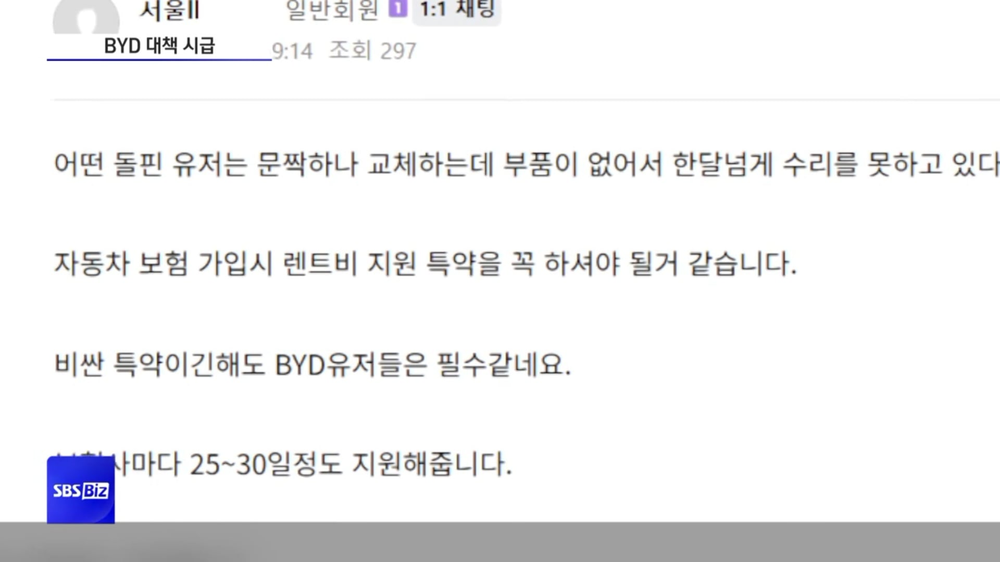
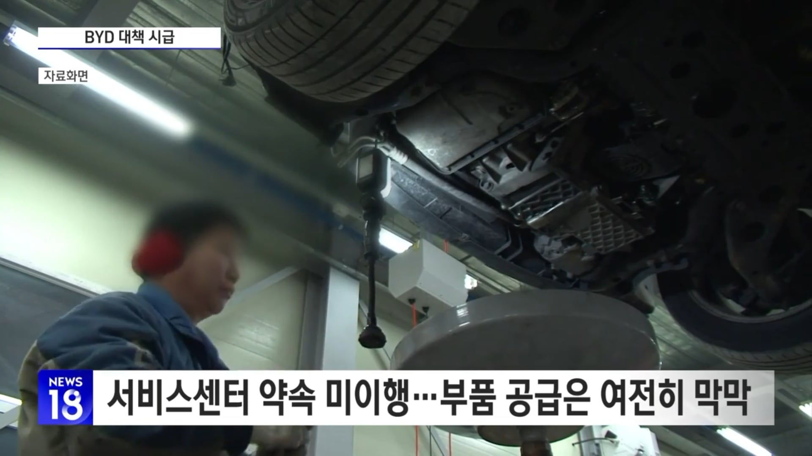
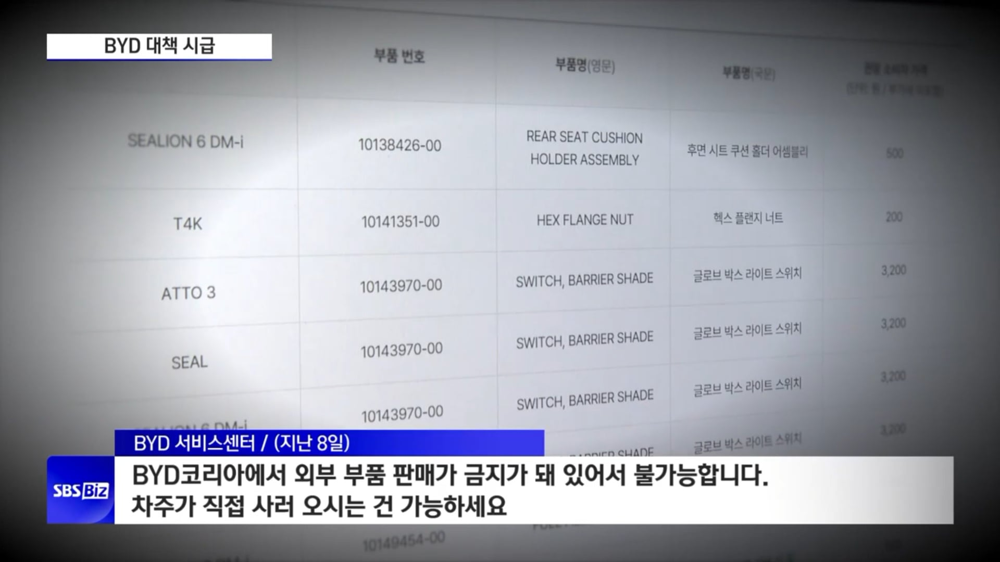

니들이 선택한 BYD다



니들이 선택한 BYD다
진짜 저걸 왜삼
BYD 이름도 빤쓰회사 BYC 랑 비슷해서 거부감부터 드는데 비위좋네
중국차를 살 바에 르쌍쉐가 나아보임.
르쌍쉐가 좋다는 뜻은 아니고.
쌍은 죽었어 이제 없어
BYD타는사람이 있나?
누칼협
차는 이동수단 뿐이 아니라, 뭔가 오너의 이미지 같은 것도 보여주는데...
byd에서 내리는 사람 보면 딱 드는 생각이 '중국사람 인가...아님 좀 형편이 좋지 못한 사람인가...'
??? : 아무리 그래도 현기 사느니 BYD 산다 ㅋㅋㅋ
조선족도 안타는 차
안그래도 이미지 좆박앆는데 나락가누
솔직히 선택지로 고민했었는데
용인 사는 사람 보고 청주까지 오라고한 건 선 넘었네
느아비~
어제 인스타에선 비야디 고장 잘 안난다 이런댓글 달리고 있던데 아ㅋㅋㅋㅋㅋ